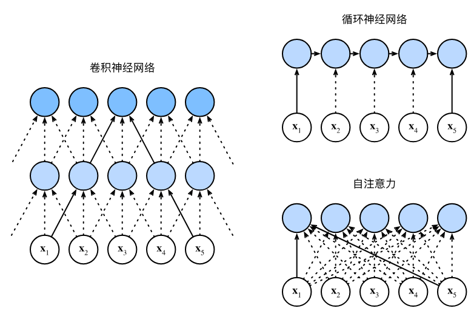

16. 注意力机制
内容概述：
注意力机制
补充
Seq2Seq与注意力机制
- 添加额外的注意层以编码器的输出作为存储器
- 注意力的输出用作解码器的输入

编码器-解码器注意力机制
- 使用编码器中的最后一个循环神经网络层的输出
- 然后注意力输出与嵌入输出拼接，以输入解码器中的第一个循环神经网络

注意力提示
一、核心思想：注意力是稀缺资源
- 注意力是有限、稀缺、有价值的资源，有机会成本。
- 环境信息远大于大脑处理能力，必须选择性关注。
- 注意力分配 = 资源最优分配，是 “注意力经济”。
二、生物学中的两类注意力提示
1、非自主性提示（被动）
基于突出性、显眼性；不受主观控制，环境自动吸引注意力（如红色杯子）。
2、自主性提示（主动）
由主观意愿、任务目标、认知驱动；有意识地选择关注对象（如主动看书）。
三、注意力机制的核心框架：Query / Key / Value
Query（查询） = 自主性提示（我想要什么）
Key（键） = 非自主性提示（输入本身的特征）
Value（值） = 实际要被加权聚合的感官输入
机制：
通过 Query 与 Key 的匹配 计算注意力权重，再对 Value 做加权平均（注意力汇聚）。

- 它的存储器（memory）有键值对组成。
- 键和查询越相似，则输出值约接近。

四、与全连接 / 汇聚层的本质区别
全连接 / 汇聚层：无自主提示，固定 / 均匀加权。 注意力机制：加入 Query（自主意图），实现动态、自适应加权。
五、注意力权重与可视化
注意力本质：加权平均，权重由 Query 和 Key 计算。
可用热图（heatmap） 直观展示：
- 行：Queries
- 列：Keys
- 颜色深浅：注意力权重大小

注意力汇聚：Nadaraya-Watson 核回归
一、核心定位：NW核回归的角色
Nadaraya-Watson（NW）核回归是注意力机制的极简实践范例——用回归任务直观演示了“注意力汇聚”的核心逻辑（对值的加权平均）。
二、注意力汇聚的本质（核心）
注意力汇聚 ≠ 平均汇聚：
-
平均汇聚：对所有值均等加权（无注意力区分），预测效果差；
-
注意力汇聚：对值动态加权平均，权重由「查询（Query）与键（Key）的相似度」决定（越相似，权重越高）。
三、两类注意力汇聚（NW核回归的两种形式）
| 类型 | 核心特点 | 公式（高斯核） | 预测效果 |
|---|---|---|---|
| 非参数版 | 无可学习参数，纯依赖数据 | 权重 = softmax(-(Query-Key)²/2) | 曲线平滑，数据足够时收敛到最优 |
| 带参数版 | 加入可学习参数 w |
权重 = softmax(-((Query-Key)×w)²/2) | 曲线更贴合带噪声的训练数据（不平滑） |
关键细节：
-
非参数版：注意力权重“随Query-Key距离递减”，热图呈现对角线集中（越近权重越高）；
-
带参数版：可学习参数
w能调整相似度的“敏感度”，训练后权重集中度更高，曲线更贴合训练数据。
四、关键技术：批量矩阵乘法（bmm）
1. 作用
高效计算小批量数据的注意力加权平均（避免逐样本计算，提升效率）。
2. 形状规则
若输入张量形状为 (B, m, k) 和 (B, k, n)，批量矩阵乘法输出为 (B, m, n)（B=批量大小）。
3. 注意力场景应用
权重（B, 查詢数, 键数） × 值（B, 键数, 1）→ 加权后的预测值（B, 查詢数, 1）。
五、带参数版NW核回归的训练流程
-
数据变换：将训练输入/输出转为“键-值对”（排除自身，避免过拟合）；
-
损失函数：均方误差（MSE）；
-
优化器：随机梯度下降（SGD）；
-
核心操作：通过反向传播学习参数
w，调整注意力权重的分配规则。
六、本节小结
-
NW核回归是注意力机制的经典回归范例；
-
注意力汇聚=值的加权平均，权重由Query-Key相似度决定；
-
注意力汇聚分非参数（无训练参数、平滑）和带参数（有可学习w、贴合数据）两类；
-
批量矩阵乘法（bmm）是高效计算注意力加权平均的关键。
注意力评分函数（评分函数）
一、核心定位：注意力评分函数的作用

注意力评分函数（简称评分函数）是连接查询（Query）和键（Key）、计算注意力权重的核心，其核心逻辑的：
-
输入：查询
q和键k（向量）； -
输出：标量（表示
q和k的相似度）； -
后续操作：将评分函数的输出输入
softmax，得到注意力权重，最终通过加权和得到注意力汇聚输出。
数学表达（核心公式）
设查询 q、n 个“键-值对” (k₁,v₁),...,(kₙ,vₙ)，则：
-
注意力权重：
α = softmax(s(q, kᵢ))（s为评分函数） -
注意力汇聚输出：
注意力汇聚(q, {(k₁,v₁),...,(kₙ,vₙ)}) = Σαᵢvᵢ
二、关键辅助操作：掩蔽softmax（masked_softmax）
1. 核心作用
过滤无效的“键-值对”，避免无意义的词元（如文本填充词元）参与注意力汇聚，确保注意力权重仅分配给有效数据。
2. 实现逻辑
-
输入：3D张量
X（批量大小×查询数×键数）、有效长度valid_lens（1D/2D，指定有效键的个数）； -
操作：将超出有效长度的位置替换为极小值（
-1e6），经过softmax后该位置权重趋近于0； -
应用场景：小批量文本处理（过滤填充词元）、序列任务（过滤无效时序位置）。
3. 关键示例
-
1D有效长度：
masked_softmax(torch.rand(2,2,4), torch.tensor([2,3]))，超出长度2、3的位置权重为0； -
2D有效长度：为每个查询单独指定有效键长度，灵活适配不同样本的有效数据范围。
三、两种核心注意力评分函数
（一）加性注意力（Additive Attention）
1. 适用场景
查询和键的维度不同（无法直接做点积）。
2. 评分函数公式
s(q, k) = wᵥᵀ · tanh(W_q q + W_k k)
-
可学习参数：
W_q（查询投影矩阵）、W_k（键投影矩阵）、wᵥ（输出投影向量）； -
核心逻辑：将
q和k分别投影到同一隐藏维度，再连结（广播求和），通过tanh激活后，投影为标量评分。
3. 实现细节（代码核心）
-
类
AdditiveAttention核心层：W_q（Linear，无偏置）、W_k（Linear，无偏置）、w_v（Linear，无偏置）、Dropout（正则化）； -
前向传播步骤：查询/键投影 → 广播求和生成特征 →
tanh激活 → 标量评分 → 掩蔽softmax得权重 → 加权和输出（批量矩阵乘法bmm）； -
输入输出形状：
-
输入：
queries(批量, 查询数, 查询维度)、keys(批量, 键数, 键维度)、values(批量, 键数, 值维度)； -
输出：(批量, 查询数, 值维度)。
-
（二）缩放点积注意力（Scaled Dot-Product Attention）
1. 适用场景
查询和键的维度相同（计算效率远高于加性注意力，是Transformer的核心）。
2. 评分函数公式
s(q, k) = (q · k) / √d（d 为查询/键的维度）
-
核心改进：除以
√d，解决“维度d增大时，点积方差过大、softmax输出趋于极端（要么接近1，要么接近0）”的问题； -
批量计算公式：
注意力输出 = softmax(QKᵀ / √d) · V（Q为查询矩阵，K为键矩阵，V为值矩阵）。
3. 实现细节（代码核心）
-
类
DotProductAttention核心层：仅Dropout（无额外投影层，计算更高效）； -
前向传播步骤：计算点积 → 缩放（除以
√d） → 掩蔽softmax得权重 → 加权和输出（bmm）； -
关键优势：无额外可学习参数，仅通过矩阵运算实现，速度快、显存占用低。
四、两种评分函数对比（易记表格）
| 对比维度 | 加性注意力 | 缩放点积注意力 |
|---|---|---|
| 适用场景 | 查询、键维度不同 | 查询、键维度相同 |
| 可学习参数 | 有（W_q、W_k、w_v） | 无 |
| 计算效率 | 较低（需投影+激活） | 较高（仅矩阵点积+缩放） |
| 核心优势 | 灵活性高，适配不同维度 | 高效简洁，适合大规模任务 |
五、本节小结
-
评分函数的作用：计算Q与K的相似度，为注意力权重提供依据；
-
掩蔽softmax：过滤无效键-值对，保证注意力权重的有效性；
-
加性注意力：适配Q、K维度不同，有可学习参数，灵活性高；
-
缩放点积注意力：适配Q、K维度相同，无额外参数，效率高；
-
核心逻辑：评分→softmax得权重→加权和得注意力汇聚输出。
Bahdanau注意力模型
一、核心背景：为什么需要Bahdanau注意力？
1. 传统Seq2Seq的痛点
传统Seq2Seq（编码器-解码器）的核心问题：每个解码步骤都使用相同的固定形状上下文变量，无法区分输入（源）序列中对当前解码词元有用/无用的部分，导致长序列翻译等任务效果不佳。
2. 灵感来源
受Graves可微注意力模型（文本字符与笔迹对齐，单向对齐）启发，Bahdanau等人提出无严格单向对齐限制的可微注意力模型——让模型在预测每个词元时，仅“关注”输入序列中与之相关的部分，通过动态生成上下文变量解决上述痛点。
二、Bahdanau注意力模型核心
1. 核心改进
将传统Seq2Seq中“固定上下文变量”，替换为每个解码时间步动态生成的注意力汇聚输出，即解码时间步 t 的上下文变量 c_t 由注意力机制计算得到。
2. 核心公式与Q/K/V定义
设输入序列长度为 n，解码时间步为 t：
- 上下文变量（注意力汇聚输出）：

-
各组件对应关系（衔接注意力评分函数知识点）：
-
查询（Query）：解码器上一时间步的隐状态
s_{t-1}（当前解码的“意图”）； -
键（Key）：编码器所有时间步的隐状态
h_i（输入序列的“特征标识”）； -
值（Value）：编码器所有时间步的隐状态
h_i（与键相同，简化设计）； -
评分函数：使用加性注意力（适配解码器隐状态与编码器隐状态可能不同维度的情况），通过
softmax得到注意力权重α_{t,i}，最终加权和得到c_t。
-

3. 模型架构差异
与传统Seq2Seq编码器-解码器相比，核心差异仅在解码器：解码器每个时间步的输入，由“上一步输出词元的嵌入 + 当前注意力汇聚输出（动态上下文变量）”共同构成，实现动态关注输入序列的相关部分。
三、核心实现：注意力解码器（代码关键细节）
1. 基础接口：AttentionDecoder
定义带有注意力机制解码器的统一接口，核心是暴露 attention_weights 属性（用于后续可视化注意力权重），未实现具体逻辑，供子类继承。
2. 具体实现：Seq2SeqAttentionDecoder（核心类）
（1）初始化参数
-
核心组件：加性注意力（
AdditiveAttention）、词嵌入层（Embedding）、GRU解码器（GRU）、全连接层（Linear，输出词表维度）； -
关键设计：GRU输入维度 = 词嵌入维度 + 编码器隐状态维度（因为要拼接“词嵌入 + 注意力输出”）。
（2）核心方法
-
init_state（初始化解码器状态）：-
输入：编码器输出（
enc_outputs，含编码器所有时间步隐状态）、编码器有效长度（enc_valid_lens，过滤填充词元）； -
输出：调整维度后的编码器隐状态（作为注意力的K/V）、解码器初始隐状态、编码器有效长度。
-
-
forward（前向传播，核心步骤）：
① 词嵌入：将解码器输入 X（目标序列）转为词嵌入，调整维度适配GRU输入；
② 循环处理每个解码时间步：
-
生成查询：取解码器上一步的最终层隐状态（
hidden_state[-1]），调整维度作为查询； -
计算注意力：通过加性注意力，用查询匹配编码器隐状态（K/V），得到上下文变量
context； -
拼接特征：将上下文变量与当前时间步的词嵌入拼接，作为GRU的输入；
-
GRU前向：更新解码器隐状态，记录输出和注意力权重；
③ 全连接输出：将所有时间步的输出拼接，通过全连接层转为词表维度，返回最终输出和更新后的状态。
attention_weights（属性）：返回每个解码时间步的注意力权重，用于后续可视化。
（3）关键形状（便于理解代码）
-
编码器输出
enc_outputs：(批量大小, 输入序列长度, 编码器隐状态维度)； -
解码器输入
X：(批量大小, 目标序列长度) → 词嵌入后：(目标序列长度, 批量大小, 嵌入维度)； -
上下文变量
context：(批量大小, 1, 编码器隐状态维度)； -
最终输出：(批量大小, 目标序列长度, 词表大小)。
3. 简单测试
用小批量数据（4个样本，每个7个时间步）测试解码器，验证输出形状符合预期，确保注意力机制和GRU解码器正常工作。
四、训练与验证
1. 训练配置
-
超参数：嵌入维度、隐状态维度、层数、 dropout（正则化）、批量大小、学习率、训练轮次；
-
数据：机器翻译数据集（英→法），加载并处理为批量迭代器；
-
模型：实例化Seq2Seq编码器、Bahdanau注意力解码器，组合为
EncoderDecoder模型； -
训练方法：与传统Seq2Seq一致，但因新增注意力机制，训练速度更慢。
2. 预测与评估
-
预测：将英语句子翻译成法语，输出翻译结果；
-
评估指标：BLEU分数（衡量翻译质量，越接近1越好），示例中多数句子BLEU=1.0，说明模型翻译效果较好。
3. 注意力权重可视化
- 核心结论：每个解码时间步（查询）会对输入序列的不同位置（键）分配不同的注意力权重，证明模型确实在“选择性关注”输入序列中与当前预测相关的部分（如翻译“je suis chez moi”时，会重点关注输入“i'm home”的对应词元）。
五、传统Seq2Seq与Bahdanau注意力Seq2Seq对比
| 对比维度 | 传统Seq2Seq | Bahdanau注意力Seq2Seq |
|---|---|---|
| 上下文变量 | 固定不变（全序列编码结果） | 动态生成（每个解码步不同） |
| 输入关注方式 | 无选择性（关注全序列） | 选择性关注（仅相关部分） |
| 核心优势 | 计算简单、速度快 | 长序列效果好、翻译更精准 |
| 评分函数 | 无注意力评分 | 加性注意力评分函数 |
六、本节核心小结
-
Bahdanau注意力解决传统Seq2Seq“固定上下文变量”的痛点，实现对输入序列的选择性关注；
-
核心逻辑：每个解码步的上下文变量 = 加性注意力汇聚输出，Q=解码器上一步隐状态，K=V=编码器所有隐状态；
-
解码器核心：拼接“词嵌入 + 注意力输出”作为GRU输入，动态更新隐状态和注意力权重；
-
关键验证：BLEU分数评估翻译质量，注意力权重可视化验证“选择性关注”的有效性。
多头注意力机制
一、核心背景：为什么需要多头注意力？
单一注意力头的局限性：
-
仅能学习查询（Q）、键（K）、值（V）的一种子空间表示，只能捕获序列中某一种依赖关系（如仅短距离/仅长距离）；
-
无法组合多种不同的注意力行为，表达能力有限。
多头注意力的目标：
让模型基于相同的Q/K/V集合，学习不同子空间的表示，并行计算多个注意力头，组合不同头的输出，从而捕获序列内多种范围的依赖关系（短距离+长距离、局部+全局等）。
二、多头注意力核心思想（重点）

核心逻辑：“分→并→合”
-
分：将Q/K/V通过多组独立的线性投影，变换到不同的子空间（生成多组Q/K/V）；
-
并：每组变换后的Q/K/V并行计算一个注意力头（用缩放点积注意力）；
-
合：将多个头的输出拼接，再通过一次线性投影得到最终输出。
三、数学模型（形式化表达）
设注意力头数为 \(h\) ，给定查询 \(\boldsymbol{q} \in \mathbb{R}^{d_q}\) 、键 \(\boldsymbol{k} \in \mathbb{R}^{d_k}\) 、值 \(\boldsymbol{v} \in \mathbb{R}^{d_v}\) ：
1. 单个注意力头 \(i\) 的计算
\(\boldsymbol{o}_i = \text{Attention}(\boldsymbol{q} \boldsymbol{W}_q^{(i)}, \boldsymbol{k} \boldsymbol{W}_k^{(i)}, \boldsymbol{v} \boldsymbol{W}_v^{(i)})\)
-
\(\boldsymbol{W}_q^{(i)} \in \mathbb{R}^{d_q \times d_h}\) 、 \(\boldsymbol{W}_k^{(i)} \in \mathbb{R}^{d_k \times d_h}\) 、 \(\boldsymbol{W}_v^{(i)} \in \mathbb{R}^{d_v \times d_h}\) ：第 \(i\) 个头的可学习线性投影参数；
-
\(d_h\) ：单个头的特征维度（通常设 \(d_h = \frac{d_{\text{hiddens}}}{h}\) ，保证总计算量与单头一致）；
-
\(\text{Attention}\) ：缩放点积注意力（优先选择，计算效率高）。
2. 多头注意力最终输出
\(\boldsymbol{o} = \left[\boldsymbol{o}_1, \boldsymbol{o}_2, ..., \boldsymbol{o}_h\right] \boldsymbol{W}_o\)
-
\(\left[\boldsymbol{o}_1,...,\boldsymbol{o}_h\right]\) ： \(h\) 个头输出的拼接（维度 \(h \cdot d_h = d_{\text{hiddens}}\) ）；
-
\(\boldsymbol{W}_o \in \mathbb{R}^{h \cdot d_h \times d_{\text{hiddens}}}\) ：最终的可学习线性投影参数。
四、实现关键：并行计算（核心代码细节）
为避免逐个计算注意力头（效率低），通过张量转置/重塑实现 \(h\) 个头的并行计算，核心依赖两个函数：
1. 核心函数：transpose_qkv（拆分并转置，适配并行）
作用
将Q/K/V从“批量×序列长度×总隐维度”，重塑为“批量×头数×序列长度×单头隐维度”，再展平为“批量×头数 × 序列长度×单头隐维度”，让多个头在批量维度并行计算。
形状变换（关键）
输入（Q/K/V）： \((batch_size, seq_len, num_hiddens)\)
→ 重塑： \((batch_size, seq_len, num_heads, num_hiddens/num_heads)\)
→ 转置： \((batch_size, num_heads, seq_len, num_hiddens/num_heads)\)
→ 展平： \((batch_size \times num_heads, seq_len, num_hiddens/num_heads)\)
2. 核心函数：transpose_output（还原形状）
作用
将并行计算后的多个头输出，从“批量×头数 × 序列长度×单头隐维度”还原为“批量×序列长度×总隐维度”，以便拼接后线性投影。
形状变换（关键）
输入： \((batch_size \times num_heads, seq_len, num_hiddens/num_heads)\)
→ 重塑： \((batch_size, num_heads, seq_len, num_hiddens/num_heads)\)
→ 转置： \((batch_size, seq_len, num_heads, num_hiddens/num_heads)\)
→ 展平： \((batch_size, seq_len, num_hiddens)\)
3. MultiHeadAttention类核心逻辑
class MultiHeadAttention(nn.Module):
def __init__(self, key_size, query_size, value_size, num_hiddens, num_heads, dropout, bias=False):
super().__init__()
self.num_heads = num_heads
self.attention = d2l.DotProductAttention(dropout) # 缩放点积注意力
# 4个线性层：Q/K/V的投影 + 最终拼接后的投影
self.W_q = nn.Linear(query_size, num_hiddens, bias=bias)
self.W_k = nn.Linear(key_size, num_hiddens, bias=bias)
self.W_v = nn.Linear(value_size, num_hiddens, bias=bias)
self.W_o = nn.Linear(num_hiddens, num_hiddens, bias=bias)
def forward(self, queries, keys, values, valid_lens):
# 1. Q/K/V线性投影 + 转置适配并行计算
queries = transpose_qkv(self.W_q(queries), self.num_heads)
keys = transpose_qkv(self.W_k(keys), self.num_heads)
values = transpose_qkv(self.W_v(values), self.num_heads)
# 2. 有效长度适配：每个头复用相同的有效长度
if valid_lens is not None:
valid_lens = torch.repeat_interleave(valid_lens, repeats=self.num_heads, dim=0)
# 3. 并行计算所有头的注意力输出
output = self.attention(queries, keys, values, valid_lens)
# 4. 还原形状 + 最终线性投影
output_concat = transpose_output(output, self.num_heads)
return self.W_o(output_concat)
五、测试验证（关键形状）
输入输出形状验证（以示例参数为例）：
-
输入：Q=(2,4,100)、K=V=(2,6,100)，有效长度=[3,2]，头数=5，总隐维度=100；
-
单头隐维度：100/5=20；
-
并行计算时Q/K/V形状：(2×5,4,20)=(10,4,20)、(10,6,20)；
-
最终输出形状：(2,4,100)（批量×查询数×总隐维度），符合预期。
六、核心优势与关键设计
-
表达能力增强：多个头学习不同子空间的注意力模式，捕获多维度依赖；
-
计算效率优化：通过张量转置实现并行计算，避免逐个计算头，效率与单头接近；
-
参数规模可控：设 \(d_{\text{hiddens}} = h \cdot d_h\) ，总参数数与单头注意力基本一致（无大幅增长）。
七、本节核心小结
-
多头注意力的核心：融合多组子空间的注意力行为，捕获序列多种依赖关系；
-
实现逻辑：Q/K/V线性投影→并行计算多注意力头→拼接→最终线性投影；
-
并行关键：transpose_qkv/transpose_output实现张量形状变换，适配批量并行计算；
-
注意力头选择：优先用缩放点积注意力，保证计算效率。
自注意力和位置编码
一、自注意力（核心概念）
1. 基本定义
自注意力也被称为内部注意力，是注意力机制的特殊形式：查询（Q）、键（K）、值（V）均来自同一组输入序列，无需外部额外的键值对。输入一个词元序列后，每个词元会作为查询，关注序列内所有词元对应的键值对，最终生成和输入长度完全相同的输出序列。
2. 核心逻辑与实现
从数学层面来看，给定输入词元序列，任意位置的输出都通过注意力汇聚函数计算得出，完全依托同源的Q、K、V完成加权聚合。实际代码实现中，自注意力直接基于多头注意力搭建，输入张量形状为（批量大小，序列长度/时间步数，隐层维度），输出张量与输入形状完全一致，保证序列编码的长度适配性。
代码核心要点：输入X同时充当Q、K、V传入多头注意力层，最终输出形状和输入完全匹配，这也是自注意力能直接替换RNN/CNN做序列编码的关键。
3. 核心优势
每个词元都能直接和序列内任意词元建立关联，彻底打破了RNN的局部依赖限制，能轻松捕捉序列内长距离依赖关系，同时支持完全并行计算，效率远高于逐词处理的RNN。
二、卷积神经网络、循环神经网络、自注意力三大架构对比

本节核心对比环节，围绕计算复杂度、顺序操作、最大路径长度、并行能力、长距离依赖五大维度，对比三种序列建模架构的优劣，明确各自适用场景，具体对比如下：
| 对比维度 | 卷积神经网络（CNN） | 循环神经网络（RNN） | 自注意力 |
|---|---|---|---|
| 计算复杂度 | O(nkd)（n=序列长度，k=卷积核大小，d=特征维度） | O(nd²) | O(n²d)（序列长度的二次方复杂度，核心缺点） |
| 顺序操作 | O(n/k)，可分层并行 | O(n)，逐词处理，完全无法并行 | O(1)，所有位置同步计算，完全并行 |
| 最大路径长度 | O(logₖn)，多层卷积才能覆盖长序列 | O(n)，长序列依赖传递路径极长 | O(1)，任意位置直接相连，路径最短 |
| 并行计算能力 | 支持并行，效率较高 | 不支持并行，效率极低 | 完全并行，效率最高 |
| 长距离依赖 | 学习难度大，仅能捕捉局部依赖 | 学习难度极大，容易梯度消失 | 轻松捕捉，建模能力极强 |
| 核心缺点 | 长序列全局依赖建模弱 | 无法并行、长依赖难学 | 长序列计算成本极高（二次方复杂度） |
关键结论：CNN和自注意力都具备并行优势，自注意力的长距离依赖建模能力最强，但序列过长时计算速度会大幅变慢，这是自注意力最核心的局限性。
三、位置编码（核心补充模块）
1. 引入背景
RNN是逐个词元顺序处理，天生自带序列的位置顺序信息；而自注意力采用完全并行计算，所有词元同时参与运算，完全丢失了词元的先后顺序信息。但序列任务（如文本、语音）中，词元顺序直接决定语义，因此需要通过位置编码，向输入表示中注入位置信息，弥补这一缺陷。
2. 基本定义
位置编码是向输入词嵌入中叠加额外的位置特征，为模型提供绝对位置信息（词元在序列中的具体位置）和相对位置信息（词元之间的距离关系）。位置编码分为可学习型和固定型，本节采用Transformer原生的正弦余弦固定位置编码，无需训练，直接通过三角函数生成。
3. 核心公式与实现
位置编码通过位置嵌入矩阵实现，矩阵的行对应词元在序列中的位置，列对应编码维度，核心规则为：
-
偶数维度：采用正弦函数（sin）计算
-
奇数维度：采用余弦函数（cos）计算
代码实现通过PositionalEncoding类完成：先创建足够长的位置矩阵，前向传播时将位置编码直接叠加到输入词嵌入上，再通过Dropout做正则化，保证位置信息稳定注入。
4. 核心特性
-
捕获绝对位置：不同位置的编码值不同，编码维度上的频率沿维度方向单调递减，连续浮点数表示比二进制更节省空间，能清晰区分每个词元的绝对位置。
-
捕获相对位置：对于任意固定的位置偏移，某一位置的编码可通过线性投影得到另一位置的编码，模型能自主学习词元之间的相对位置关系，不依赖具体位置索引。
四、本节核心小结
-
自注意力的核心是Q、K、V同源，均来自输入序列本身，也叫内部注意力，输出与输入等长。
-
自注意力并行能力最强、长距离依赖建模最优，但计算复杂度是序列长度的二次方，长序列运行速度慢。
-
RNN自带顺序信息但无法并行，CNN可并行但长依赖弱，自注意力需额外补充位置信息。
-
位置编码的作用是向并行计算的自注意力注入绝对+相对位置信息，Transformer常用正弦余弦固定编码实现。
五、关键注意事项
-
自注意力不可单独直接用于序列任务，必须搭配位置编码，否则模型无法识别词元先后顺序，任务效果会大幅下降。
-
长序列任务中，自注意力的二次方复杂度是核心瓶颈，后续Transformer变体多针对这一点做优化。
-
位置编码直接叠加在输入嵌入上，不改变输入输出形状，不影响原有注意力机制的计算流程。
transformer
一、核心定位与设计优势
-
核心特点：无卷积/循环层，完全基于注意力机制，同时具备极致并行性（自注意力替代 RNN 逐词处理）和短路径长度（任意词元直接关联），解决了 RNN 长依赖难学、CNN 全局依赖弱的问题。
-
适用场景：最初用于序列到序列（Seq2Seq）任务（如机器翻译），现扩展到 NLP/视觉/语音等领域，编码器/解码器可单独使用（如 BERT 用编码器，GPT 用解码器）。
-
对比 Bahdanau 注意力 Seq2Seq：后者仍依赖 RNN 做编解码，仅在解码器引入注意力；Transformer 则用“多头自注意力+位置编码”完全替代 RNN，并行效率更高。
二、Transformer 整体架构

Transformer 遵循编码器-解码器架构，核心是“层堆叠+残差连接+层规范化”：
-
编码器：由
num_layers个相同的编码器块堆叠而成，输入为源序列嵌入+位置编码，输出为源序列的全局表示； -
解码器：由
num_layers个相同的解码器块堆叠而成，输入为目标序列嵌入+位置编码，结合编码器输出完成预测，通过掩蔽注意力保证自回归属性； -
统一约束：所有组件的特征维度均为
num_hiddens，确保残差连接的加法操作和注意力的点积计算维度匹配。
三、核心组件详解
1. 基于位置的前馈网络（PositionWiseFFN）
-
核心逻辑：对序列中每个位置的词元表示，用同一个两层 MLP 做变换（输入→隐藏层→ReLU→输出层）；
-
形状变换：输入
(batch_size, seq_len, num_hiddens)→ 输出(batch_size, seq_len, num_hiddens)，仅改变最后一维的内部特征，不改变序列长度； -
作用：对注意力输出的特征做非线性变换，增强模型表达能力。
2. 残差连接 + 层规范化（AddNorm）
-
层规范化 vs 批量规范化：
-
批量规范化：按样本维度归一化（适合视觉）；
-
层规范化：按特征维度归一化（适合变长序列的 NLP 任务）；
-
-
AddNorm 逻辑：
ln(X + dropout(Y))，其中 X 是子层输入，Y 是子层输出； -
核心作用：解决深度模型的梯度消失问题，保证模型可训练（Transformer 层数通常≥6）。
3. 多头注意力的三类应用
| 注意力类型 | 应用位置 | 查询（Q）来源 | 键（K）/值（V）来源 | 特殊约束 |
|---|---|---|---|---|
| 编码器自注意力 | 编码器块 | 前一层编码器输出 | 前一层编码器输出 | 基于有效长度屏蔽填充词元 |
| 解码器掩蔽自注意力 | 解码器块（第一层） | 前一层解码器输出 | 前一层解码器输出 | 掩蔽未来位置（自回归） |
| 编码器-解码器注意力 | 解码器块（第二层） | 解码器自注意力输出 | 编码器最终输出 | 基于编码器有效长度屏蔽填充词元 |
四、编码器设计（TransformerEncoder）
1. 单编码器块（EncoderBlock）
-
子层结构：多头自注意力 → AddNorm → 基于位置的前馈网络 → AddNorm；
-
输入输出：形状始终为
(batch_size, seq_len, num_hiddens)，不改变序列长度； -
关键处理：自注意力阶段传入
valid_lens，避免查询与填充词元计算注意力。
2. 编码器整体流程
-
输入处理：词嵌入（
Embedding）→ 缩放（×√num_hiddens）→ 叠加位置编码（PositionalEncoding）；- 缩放原因：位置编码值在[-1,1]，嵌入值缩放后量级匹配，避免位置编码被掩盖；
-
层堆叠：依次经过
num_layers个编码器块，每个块输出都通过 AddNorm 保留残差信息； -
输出：源序列的全局特征表示，供解码器使用。
五、解码器设计（TransformerDecoder）
1. 单解码器块（DecoderBlock）
-
子层结构：掩蔽自注意力 → AddNorm → 编码器-解码器注意力 → AddNorm → 前馈网络 → AddNorm；
-
自回归约束：训练时生成
dec_valid_lens（每行是[1,2,...,seq_len]），确保查询仅关注当前及之前位置；预测时逐词生成，动态拼接已生成词元的特征。
2. 解码器整体流程
-
输入处理：与编码器一致（词嵌入+缩放+位置编码）；
-
状态初始化：传入编码器输出、编码器有效长度、空列表（存储已生成词元特征）；
-
层堆叠：依次经过
num_layers个解码器块，最终通过全连接层映射到目标词表维度； -
注意力权重存储：记录解码器自注意力和编码器-解码器注意力权重，用于可视化。
六、训练与应用
1. 训练关键
-
数据集：以英-法机器翻译为例，输入为源序列（英语）、目标序列（法语）；
-
优化器：Adam（学习率 0.005），搭配 Dropout 正则化；
-
评估指标：BLEU 分数（越接近 1 翻译效果越好）。
2. 注意力可视化
-
编码器自注意力：查询/键均来自源序列，可观察源序列内部的词元关联（如“i'm home”中“home”与“i'm”的注意力权重）；
-
解码器自注意力：掩蔽未来位置，权重矩阵下三角非零，上三角为0；
-
编码器-解码器注意力：可观察目标词元对源词元的关注（如法语“chez moi”关注英语“home”）。
七、核心小结
-
Transformer 是纯注意力的编解码架构，无 CNN/RNN，依赖多头注意力+位置编码实现序列建模；
-
编码器用自注意力建模源序列内部依赖，解码器用“掩蔽自注意力+编码器-解码器注意力”实现自回归预测；
-
残差连接+层规范化是训练深层 Transformer 的核心，基于位置的前馈网络增强特征表达；
-
位置编码解决自注意力的顺序丢失问题，缩放嵌入值保证位置编码的有效性；
-
掩蔽注意力是解码器自回归的关键，确保预测仅依赖已生成词元。
八、关键易错点
-
位置编码叠加方式：直接相加（X + Pos），而非拼接，保证特征维度不变；
-
有效长度的两类应用：编码器屏蔽填充词元，解码器掩蔽未来位置；
-
词嵌入缩放：必须×√num_hiddens，否则位置编码的作用会被嵌入值掩盖；
-
解码器状态管理：预测阶段需动态拼接已生成词元的特征，而非一次性输入全部目标序列。